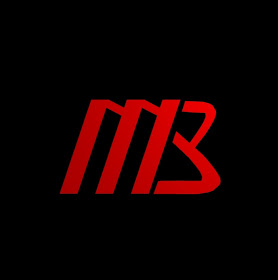

MICHAEL BOSIK
Welcome to my personal website
I'm Michael Bosik, a junior computer science and game development student at Worcester Polytechnic Institute.
Check out my resume for an overview of my accomplishments, and see the projects page or my GitHub for a detailed description of the projects I've been working on.
About Me
About me.
If you have any questions or comments about this website or any of my projects, or if you just want to say hi, feel free to email me at mbosik@wpi.edu.